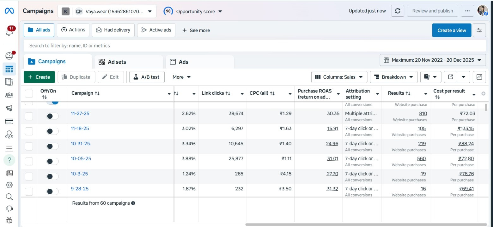

Fashion Brand – Vaya.Wear
What We Did: creative testing, audience testing placement testing, influencer marketing, content idea's. Funnel structuring, brand positioning
what we Got :- 20x ROAS, ₹2.5 CR Frist Year Sales.
20x ROAS
₹2.5 CR Frist Year Sales
1️⃣ The Problem (Before We Came In)
When we started working with Vaya Wear:
- Inconsistent sales
- No clear content strategy
- Ads running without proper funnel structure
- Weak brand positioning
- No data-backed scaling system
They weren’t lacking effort. They were lacking structure & direction.
2️⃣ What We Did
🎯 Step 1: Fixed Positioning
- Identified ideal customer
- Defined brand emotion (Identity, not just clothes)
- Clarified brand differentiation
🎥 Step 2: Content System
- Scroll-stopping reels
- Strong hooks in first 3 seconds
- Lifestyle-focused visuals
- Clear CTA messaging
📊 Step 3: Structured Meta Ads Funnel
- Cold audience testing
- Retargeting warm audience
- Creative testing framework
- Scaling only winning ads
💰 Step 4: Optimization & Scaling
- Killed underperforming ads
- Increased budget on winners
- Improved CTR
- Reduced CPA over time
3️⃣ The Result
- Increased sales consistency
- Improved ROAS
- Reduced cost per purchase
- Stronger brand presence
4️⃣ The Big Shift
Before: Running ads hoping for sales.
After: Running a predictable system designed for scale.
See Brand Result :-
{kind=link}

{kind=link}
{kind=link}